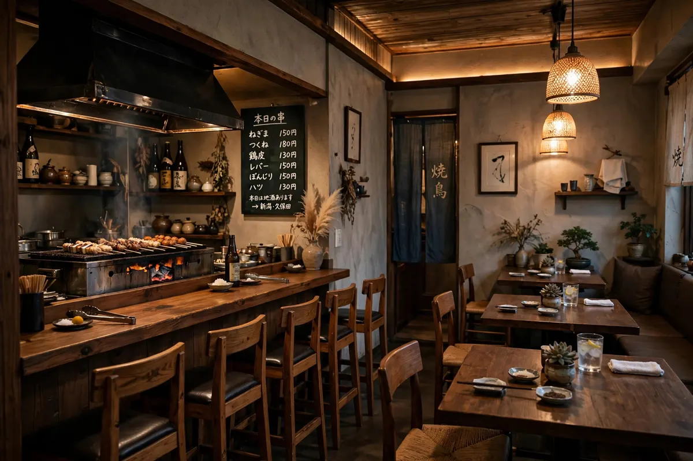

繋ぎ不使用の自慢の「つくね」と、パリッとジューシーな「かわ」。
炭火の香りと一緒に、一本ずつ丁寧に焼き上げます。
炭火と素材にこだわる、3つの理由。
串はすべて炭火焼き。遠火の強火で表面を香ばしく焼き固め、中はジューシーに。炭の香りが鶏の旨みを引き立てます。
看板のつくねは、繋ぎを使わずに仕上げた自慢の一品。鶏そのものの肉感と旨みを、ダイレクトに味わえます。
JR灘駅北口から徒歩2分。カウンター席とテーブル席のある落ち着いた空間で、仕事帰りの一杯にも、ゆっくりした夜にも。
まずはこの2本から。ご予算の目安はお一人様 ¥3,000〜¥3,999 です。
※メニューの価格は店頭でご確認ください。仕入れにより内容が変わる場合があります。
営業のご案内です。最新情報はInstagramでもお知らせしています。
JR灘駅北口から徒歩2分、王子公園駅から徒歩7分。

※店内の写真はイメージです
| 店名 | 焼鳥 さん |
|---|---|
| 住所 | 〒657-0836 兵庫県神戸市灘区城内通5-5-16 |
| アクセス | JR灘駅 北口 徒歩2分／阪急 王子公園駅 徒歩7分 |
| 電話 | 078-414-7600（予約可） |
| 営業時間 | 17:00〜23:00（料理L.O. 22:30） |
| 定休日 | 木曜日 |
| 席数 | カウンター席・テーブル席 |
| ご予算 | 夜 ¥3,000〜¥3,999 |
| ご予約 | お電話・ホットペッパーから |